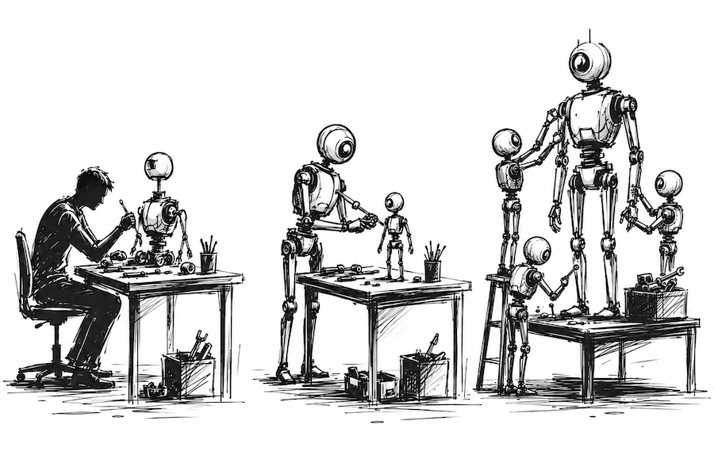
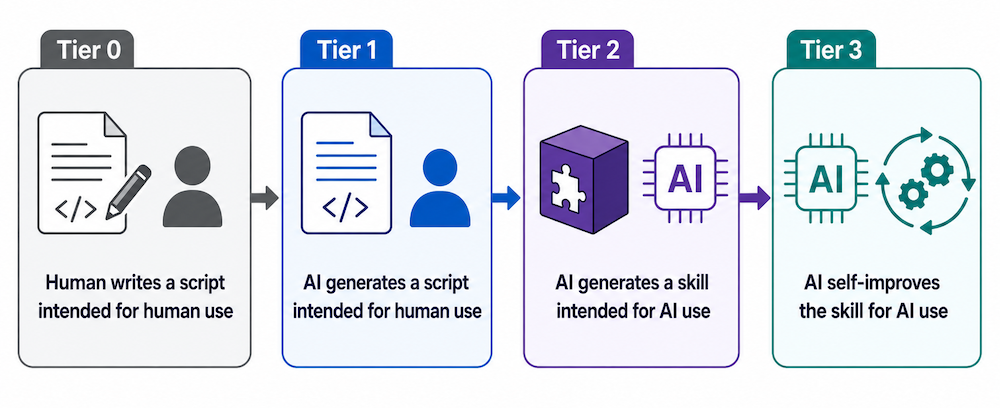

I build tools for people

This post was inspired by conversations with several colleagues: Sourav Pal, Gustavo Soares, the Excel Agent Science Team, John Lam, and Dan Morris.
I was talking to a friend who runs a startup and he said that he tells his team, "don't do anything three times." If they have to do something more than twice, they should automate it.
Surely, this is overkill? I already automated 95% of my coding-related tasks. What else would be left for me to do even? And the remaining bits are probably too hard to automate. But... I was wrong. Very, very wrong.
I started trying it. Slowly at first, because automation can be a distraction from getting work done in the moment. By the second week, I was leaning in head first—how deep does the rabbit hole go?
There was an unexpected consequence: By automating the laborious parts of my work, I had, in turn, filled my day with more laborious parts.
A menial task that took me 5 minutes once or twice a day turned into a menial task that I was doing 10-20 times a day. As I had automated the obvious parts, it left behind the glue work that never bothered me before. Now it was a substantial part of my day, and the context switching was killing me. It was no longer a linear step-by-step process since I was juggling several agents concurrently. Because of it, I was now making silly mistakes, which compounded the time and hair pulling.
"It never gets easier, you just go faster" — Greg LeMond
Try it yourself: Anytime you need to do something more than twice, spend the minimal time possible asking Copilot CLI to automate it. Don't write out a spec or give details or provide examples. Let it try to figure it out. Maybe it will fail, oh well, it is only a tiny bit of time spent, and then you can check where it failed and ask it to correct it.

I'm surprised at how far AI can get on the first try even when under-specified. But don't just generate Python scripts for automating tasks. Your agent should be generating skills so that it knows when and how to use the scripts. You shouldn't be running them manually.
Through this process, I also learned that automation allowed me to change how I worked, not just speed up my work.
Recently, Karpathy's autoresearch inspired the world to try self-improving agents. What if we expose a bunch of knobs to the agent and let it experiment continuously? Even better, what if we let the AI come up with new knobs?!
"Copilot, read my Copilot session logs from the last 7 days and propose opportunities for automation. Draft a reusable skill for each."